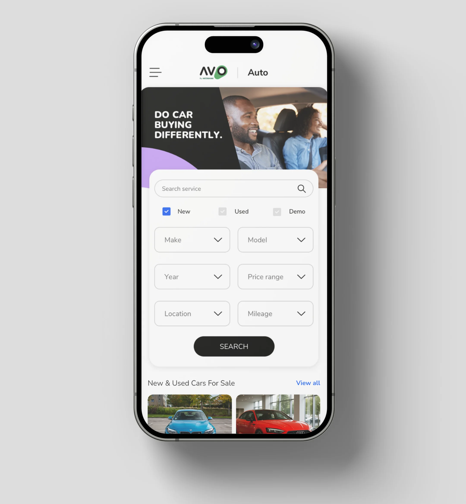
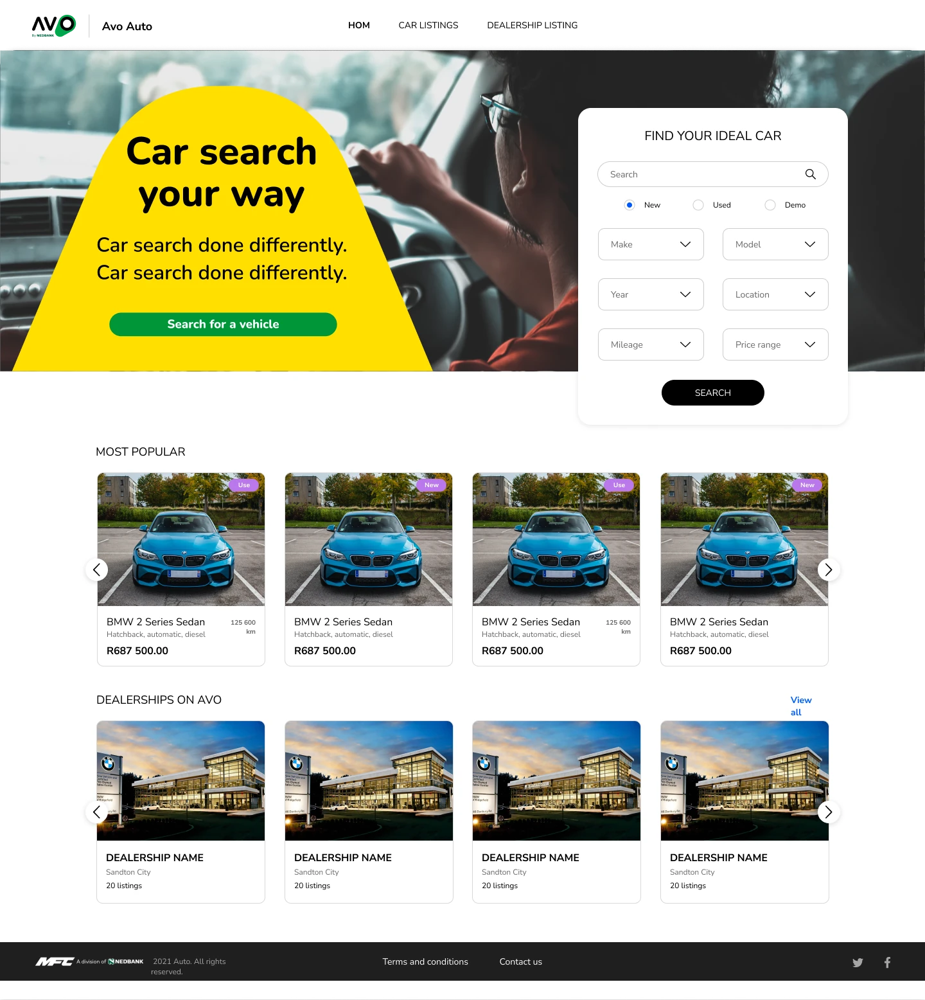
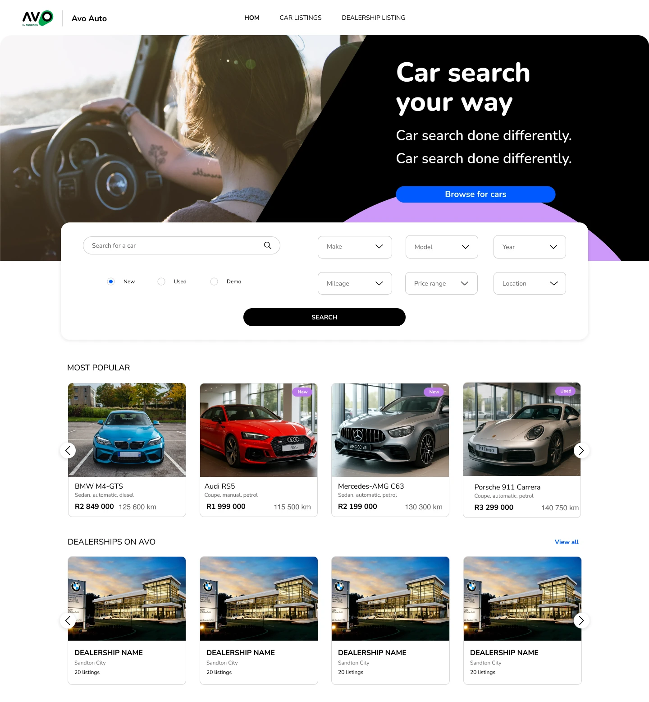

Overview
Avo Auto is a used and new car marketplace on Nedbank’s Avo platform. The inventory was good, but finding a car meant working down a long column of filters and dropdowns. I led UX on the redesign and worked with a team of UI designers. Our research showed most buyers only touch five filters, so we pulled those into a single row of filter chips, put the rest behind “More filters”, and added a compare option buyers had asked for.

The new listings page: the main filters sit in one row, the price filter opens as a small panel, and applied filters stay visible as removable chips.
Five filters did most of the work
When we watched people search, most used the same few filters: make and model, body type, price, year and mileage. The other filters only came out after they had a shortlist, to narrow it down. Most buyers also arrived knowing roughly what they wanted, often the type, the brand and a price range, because they’d already been looking on other sites. That told me the page didn’t need every filter on show. It needed those five to be fast.
Long dropdowns were the real drag
Make, model and variant lists got very long, and stacking them in a vertical column made a long page longer. It was worse on a phone. We looked at the car sites our buyers were already using. Most showed body type as a long text list, often in a dropdown. A few used icons with listing counts, and those were far easier to scan.

Body type on eleven South African car sites. Most list 15 to 20 options, and about half do it as plain text or a dropdown.

The vertical filter pattern: a search box, checkboxes and nine dropdowns stacked in one column, all with the same weight.
Searches started on a phone and finished on a laptop
Most people began looking on their phone and came back to a laptop or desktop for the detailed search. So the first search had to work on a small screen, and it had to carry over to a bigger one without feeling like a different product. We kept the same six search fields on both.

Mobile: new, used or demo, then make, model, year, price, location and mileage, two to a row with one Search button.
Chips put the five filters in one row
I swapped the vertical list for a row of filter chips across the top of the results. Each chip opens a small panel for one filter, and whatever you pick shows as a removable chip underneath, so you can see and undo your search at a glance. Body type became a grid of icons with a count for each, which is quicker to scan than a 20-line list. Anything less common lives under “More filters”.

Early wireframes: the chip row with a body-type panel dropped open over the results.


Left: body type as icons with counts, and the Compare checkbox on each card. Right: price as two fields plus a slider, with Clear and Apply in the panel.
I wrote up the chip pattern on its own: Filter chips vs. the vertical filter list.
The tradeoff: fewer filters on show
Moving to chips meant most filters were no longer visible on the page. I was fine with that because the research was clear: people reach for the extra filters after they’ve shortlisted, not before. Putting everything up front made the common search slower for everyone to help the few who wanted a niche filter first. “More filters” kept those one tap away. [ASK RYAN: Did anyone on the team or at Avo push back on hiding filters, and how did you settle it?]
A few buyers asked to compare
Some people asked if they could compare the cars on their shortlist. We added a Compare checkbox to every listing card, so you can tick cars as you browse instead of keeping tabs open.
Two versions of the landing search
The landing page search went through a couple of rounds. In the first, the search card sat to the right of the hero. In the second, it became a full-width panel under the hero with the fields in two rows, which lined up better with the mobile layout and left room for popular listings and dealerships below.


Left: iteration 1, the search card floats beside the hero. Right: iteration 2, a full-width panel under the hero with fields in two rows of three.
Outcome
The new search put the filters people actually used in one row, made applied filters visible and easy to undo, and added the compare option buyers asked for. People could get to a shortlist faster and spent more time browsing the inventory. The chip pattern also became the standard for search across the rest of Avo Auto. [ASK RYAN: the number for time to result or engagement after launch, or confirm it can’t be shared]